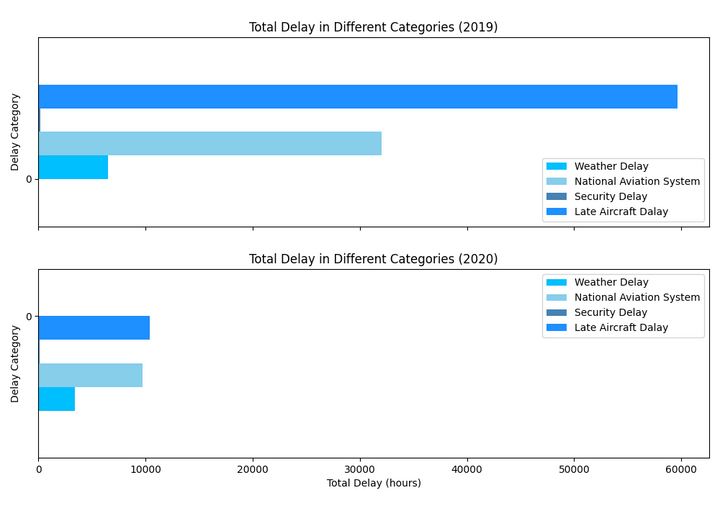
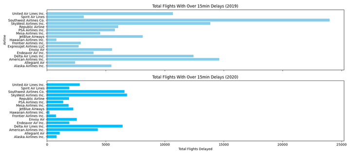

Airline Delay Causes
Intro
My interest in aviation and airlines is what drove this project. I looked for a Kaggle dataset centered around the topic. The dataset that I found contains data on airline flight delays and includes valuable information regarding different airline names, delay types, delay times, and total delays all from 2019 to 2020. In my initial analysis, I utilized the .describe() method to extract summary statistics and the .dtypes attribute to examine data types. These preliminary steps provided me with a solid foundation, offering an initial understanding of the dataset's structure and paving the way for further exploration.


With an idea of the dataset structure and content, I decided that I wanted to identify the primary cause of delays for airlines and what I could do to streamline my travel and mitigate delays. I wanted to start looking for trends in the data that could help me answer my questions.
Processing and Data Visualization
Upon my initial examination of the dataset, my focus shifted towards identifying the most prevalent delay types categorized by each year (2019 and 2020). I determined that the data was sufficiently clean, eliminating the need for further data cleaning. After sorting data by year, I created the following plots which are a simple initial analysis of the data.
The primary contributor to airline delays appears to be related to delays caused by another flight on the same aircraft. The late aircraft delay data was too vague and did not provide clear insights into the causes of airline delays. To obtain more specific information, I created a second graph that illustrates the total delays exceeding 15 minutes for different airlines. Notably, there were fewer long flight delays in 2020 compared to 2019.
The data also reveals that larger airlines tend to experience more delays, which is expected given their higher volume of flights. However, it's worth noting that even smaller airlines exhibit a significant number of delays. This observation suggests that smaller airlines may face challenges related to factors such as inclement weather, mechanical problems, and crew shortages, making them more susceptible to disruptions.
Upon analyzing the first two graphs, I decided to focus on the second most common cause of delays, which is the National Aviation System (NAS). The Bureau of Transportation Statistics defines NAS delays as, "Delays and cancellations attributable to the national aviation system that refer to a broad set of conditions, such as non-extreme weather conditions, airport operations, heavy traffic volume, and air traffic control." Despite late aircraft delays being more prevalent, it seems that the root cause of delays might lie elsewhere. NAS delays appear to be a likely culprit, given their association with various factors related to airport operations.
I then created a final plot that illustrates different airlines alongside their total NAS delays and the corresponding time affected by NAS delays. This visual representation aims to provide a clearer understanding of how each airline is impacted by delays attributed to the National Aviation System.

Findings and Impact
At the project's start, my aim was to find a singular cause for airline delays, but the data revealed a number of factors influencing flight disruptions. While weather conditions and airport operations remain beyond our control, the data analyzed highlights key considerations when seeking to address this issue. The graphs indicate that selecting an airline and strategically scheduling flights during favorable weather conditions can mitigate delays. Notably, larger airlines, despite encountering a higher volume of delayed flights due to their extensive operations, exhibit efficiency in managing crew issues, unexpected weather, and heavy air traffic. Despite the increased total number of delays, larger airlines consistently spend less time delayed per flight compared to their smaller counterparts.
In response to the question of the biggest cause of airline delays, it appears that inclement weather and issues with the National Aviation System are primary contributors. Additionally, the size of the airline itself plays a significant role.
Concerning the ethical considerations, it's reassuring that the visualizations and data used in the project don't pose any harm. The visualizations depict general trends in broad travel data, and the dataset comes from a freely available Kaggle set without any focus on specific individuals or illicit data collection.